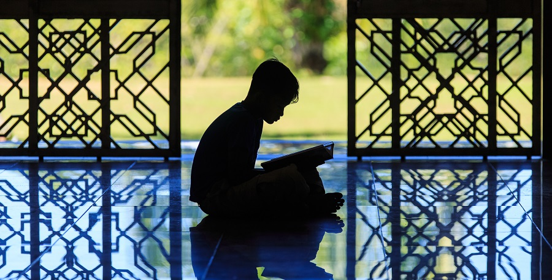
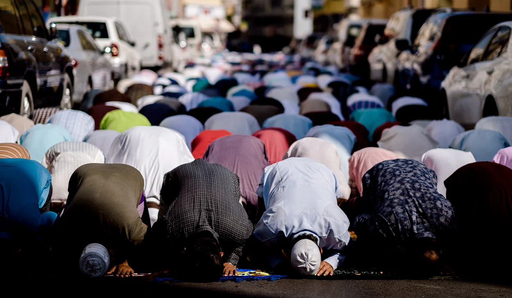
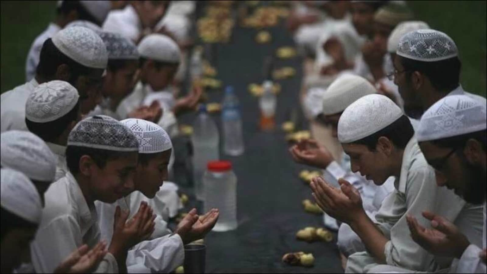
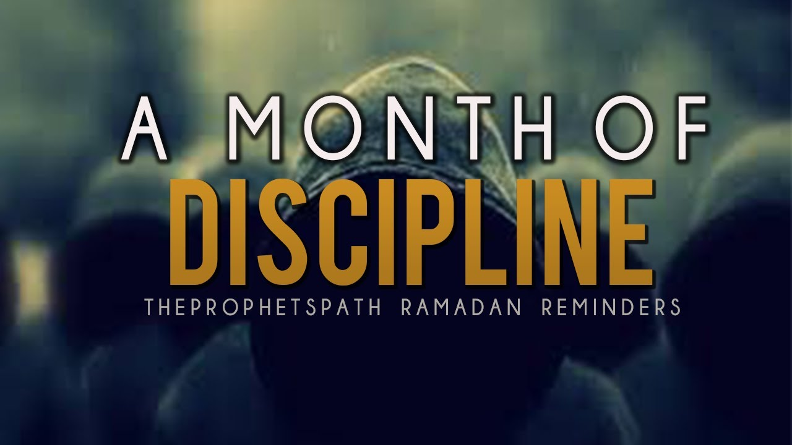
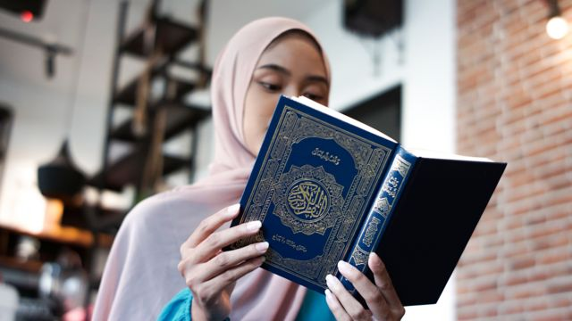
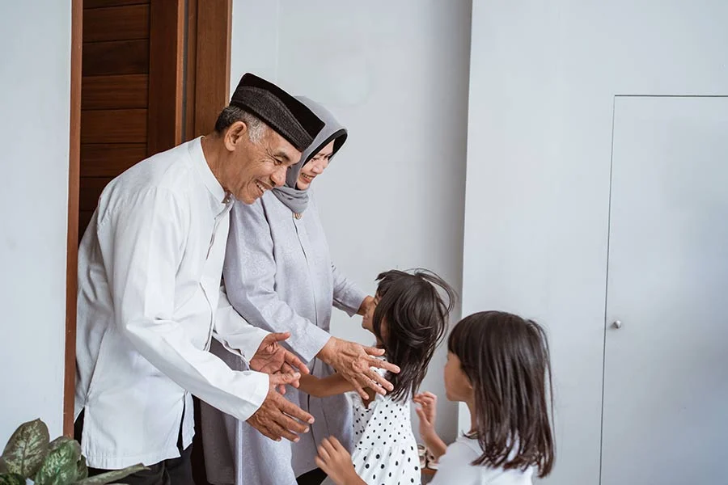
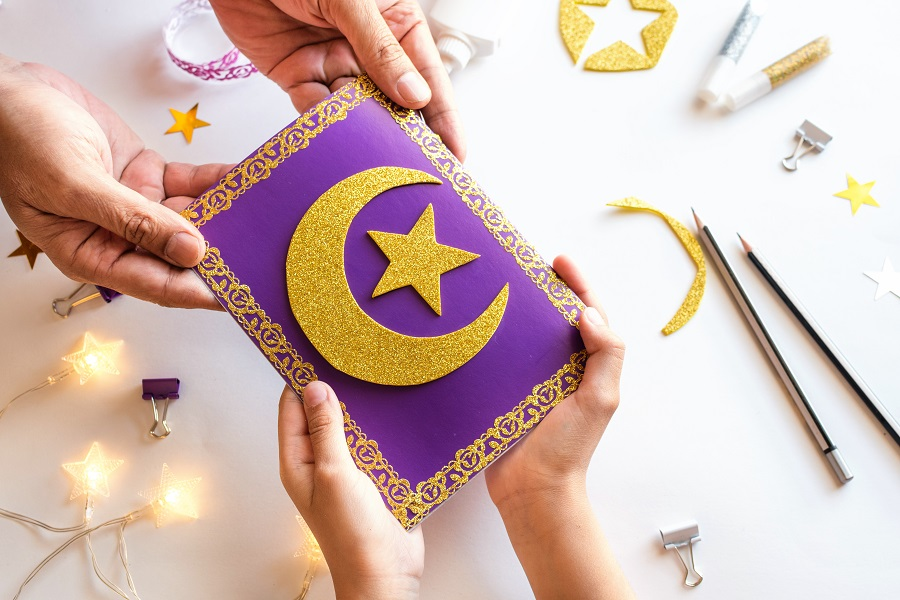

Recite the Quran
Ramadan is a time to communicate with the Almighty. Being the month when the holy book was revealed Prophet Muhammad,
Ramadan is when one should recite the Holy Quran as many times as possible. People should recite and reflect on the
verses of holy Quran in their lives.

Offer prayers
During Ramadan, all Muslims must offer Salat, which implies offering prayers five times a day. Salat is one of the Five
Pillars of Islam and helps Muslims to seek Allah’s forgiveness and guidance. These prayers are known as Salat al-fajr,
Salat al-zuhr, Salat al-‘asr, Salat al-maghrib and Salat al-‘isha. Muslims should perform Dhikr meaning appreciating
Allah through their prayers. Muslims should pray for the health and prosperity of their family.

Observe fast
Fasting during Ramadan is considered to be one of the best practices as per the Islamic culture. It is also said that
during the month of Ramadan, there is an increase in the spiritual rewards of fasting. Fasting is one of the five
pillars of Islam; hence, should be observed with utmost sincerity and faith in Allah.

Do charity
This holy month encourages brotherhood and compassion, and hence, make sure to offer some percentage of your wealth to
those in need. Muslims should donate to cater to the requirements of poor and needy during the holy month Ramadan and
also for the whole year.
Practice self-discipline and self-control
During the month of Ramadan, embrace the community spirit of compassion, self-control and self-discipline.

Maintain celibacy
Ramadan is the time to indulge in prayers and create a stronger bond with the Almighty. Hence, the community maintains
celibacy during this pious period.

Show respect
One must be tolerant, compassionate and forgiving, as this is what Ramadan aims to teach us. The month of Ramadan
promotes brotherhood and unity among the Muslim communities around the world.

Dress appropriately
Modesty is the key, so it is better to dress appropriately by avoiding ill-fitted clothes.
Wish your friends
Wishing friends and family members, enjoying family meals and time with each other, and giving gifts at Iftar are common
traditions of Ramadan.

Encourage Unity
Ramadan is the time to promote unity among friends, family and community as a whole. Pray and eat together, as it helps
strengthen the bond.